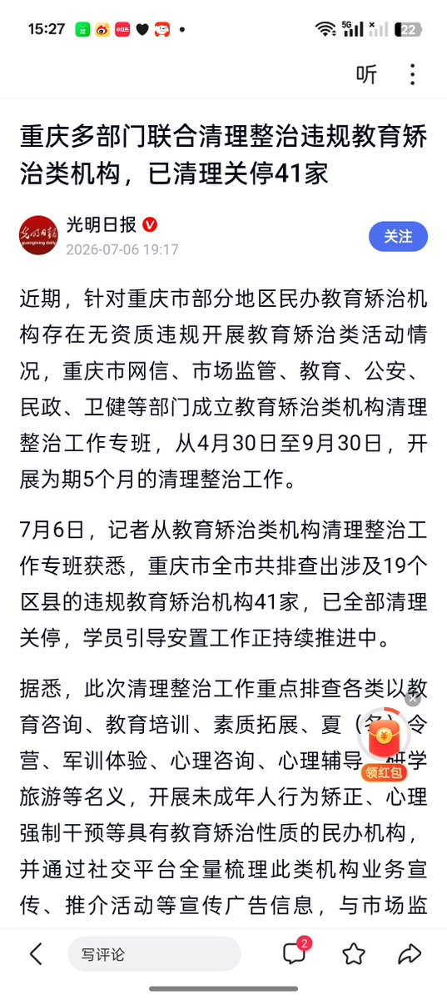
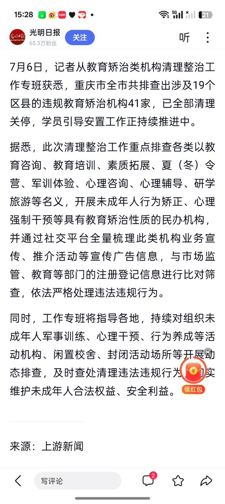
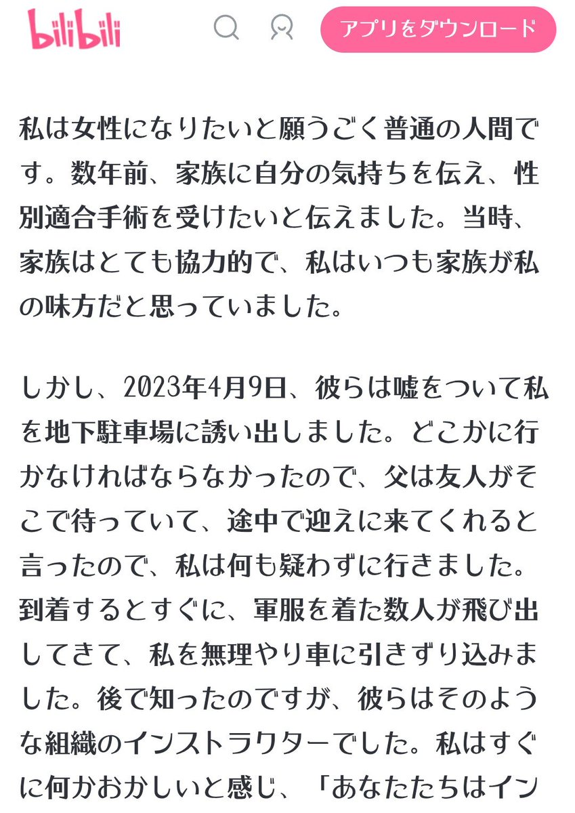

@babymoon2002 そうです
でも、近年このような施設の取り締まりを求めて頑張っている人もいます
そうした人たちのおかげで、私たちはより安全に暮らせているのです

でも、近年このような施設の取り締まりを求めて頑張っている人もいます
そうした人たちのおかげで、私たちはより安全に暮らせているのです



2026/7/6/
光明网发文:
《重庆多部门联合清理整治违规教育矫治类机构，已清理关停41家》
https://t.co/rXc7x47h0B
由重庆市网信、市场监管、教育、公安、民政、卫健等部门成立教育矫治类机构清理整治工作专班，从4月30日至9月30日，开展为期5个月的清理整治工作
目前以关停查出41家现在实体店 https://t.co/zX4V6DV1Bp
光明网发文:
《重庆多部门联合清理整治违规教育矫治类机构，已清理关停41家》
https://t.co/rXc7x47h0B
由重庆市网信、市场监管、教育、公安、民政、卫健等部门成立教育矫治类机构清理整治工作专班，从4月30日至9月30日，开展为期5个月的清理整治工作
目前以关停查出41家现在实体店 https://t.co/zX4V6DV1Bp